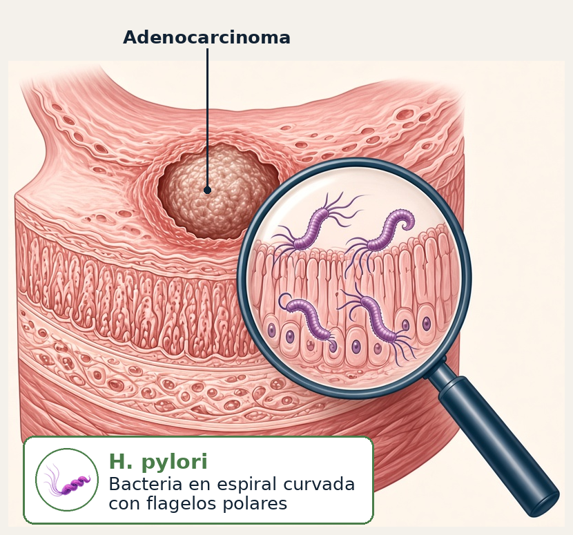

Noviembre · Concientización
Helicobacter pylori y cáncer de estómago
Mes de concientización del cáncer gástrico. Se puede detectar y tratar.

Mes de concientización del cáncer gástrico. Se puede detectar y tratar.
